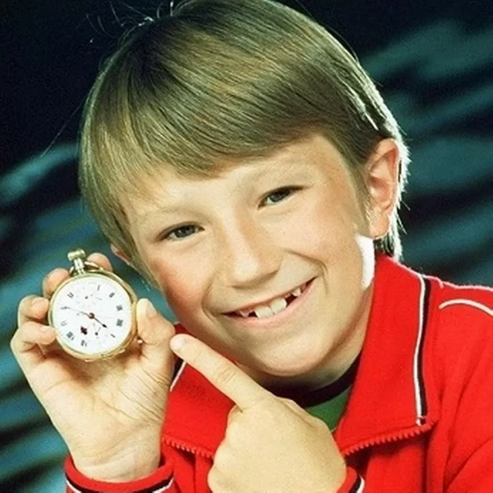
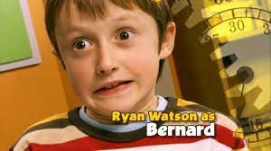

اگر سریال ساعت برنارد (Bernard’s Watch) رو یادتون میاد احتمالا نزدیک 30 سال یا بیشتر سن دارید. این سریال از سال 1997 تا 2005 پخش میشده و داستان در مورد یه پسر بچه انگلیسی بود که یه ساعت جادویی داشت که باهاش میتونست زمان رو متوقف کنه! در واقع ما با دو تا سریال رو به رو هستیم. سریال اول که ۵۳ قسمته و از سال ۱۹۹۷ تا ۲۰۰۱ پخش میشده، بازیگر نقش برنارد David Peachey بوده :

سال ۲۰۰۴-۲۰۰۵ همون کارگردان دوباره یه سریال ۲۶ قسمتی میسازه که این دفعه نقش برنارد رو Ryan Watson بازی میکنه :

بنابراین در مجموع ۷۹ قسمت از این سریال پخش شده. صدا و سیما فقط ۱۳ قسمت اول این سریال رو دوبله و پخش کرده. من نتونستم این ۱۳ قسمت رو جایی پیدا کنم. اگر سرچ کنید سایت های مختلفی نسخه بدون زیرنویس (زبان اصلی) رو گذاشتن که هیچ کدوم کامل نیستند. یعنی بعضی قسمت ها رو ندارن. من تمام این ۷۹ قسمت رو پیدا و دانلود کردم. به طور میانگین هر قسمتش ۱۳-۱۴ دقیقه است و کل ۷۹ قسمت ۱۷ ساعته. بدون زیرنویس دیدن این سریال خیلی سخت نیست و خیلی به سطح بالایی از زبان نیاز نداره ولی خب زیرنویس باشه راحت تره دیگه 🙂
راه های مختلفی وجود داره که بتونید زیرنویس این فیلم رو خودکار تولید کنید. روشی که من همیشه استفاده میکنم سایت videoindexer.ai هست. البته این سایت خیلی ویژگی های مختلفی داره که زیرنویس یکی از ساده ترین ویژگیهاش محسوب میشه! این سایت به شما اجازه میده به صورت رایگان ۲۴۰۰ دقیقه (40 ساعت) ویدئو رو پردازش کنید. در هر روز هم میذاره ۲۰ تا ویدئو آپلود کنید ولی واقعی نیست، کیکه 🙂 فقط دکمه آپلود غیرفعال میشه. یه inspect بزنید و دکمه رو فعال کنید که بتونید هر چند تا ویدئو که میخواید در یک روز آپلود کنید!
یه نمونه از پردازشی که انجام داده.فقط باید زیرنویس رو از منو انتخاب کنید که فعال بشه :
من تمام این ۷۹ قسمت رو به همراه زیرنویس فارسی و انگلیسی تو کانال تلگرامم قرار دادم. حجمش حدودا ۶ گیگه که هر فصل رو جدا rar کردم :
چون خیلی ها درخواست کردند، ویدئو نحوه کار با سایت videoindexer رو هم ضبط کردم که از لینک زیر میتونید مشاهده کنید :
nb.neighbours()
| title | date | |
|---|---|---|
| prev | کلابهاوس در آتش — داستان هک کلابهاوس | ۱۴۰۲/۰۶ |
| next | کاراکترهای پرتکرار زبانهای برنامهنویسی چیست؟ | ۱۴۰۲/۰۸ |